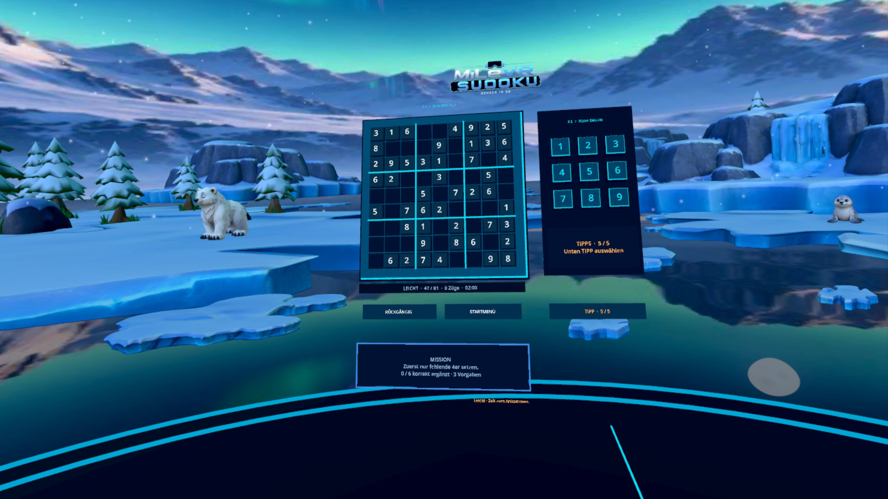
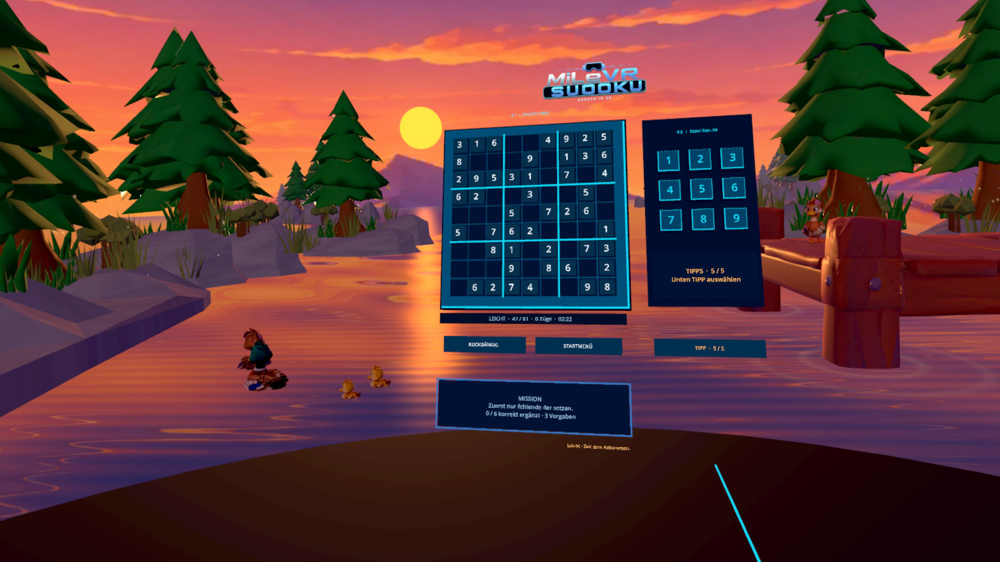
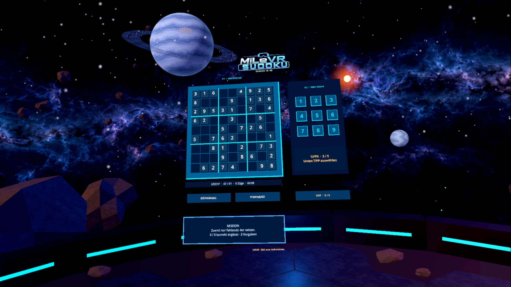
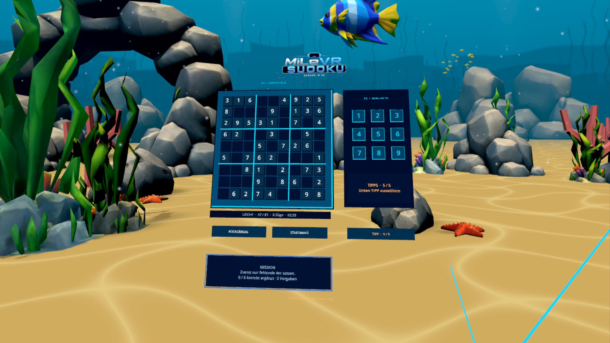
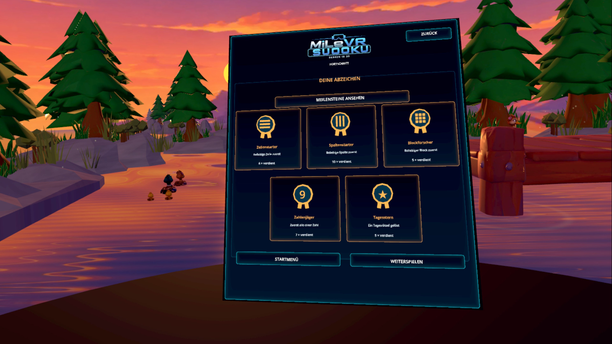

Klassisch oder Sudoku X
Wähle klassisches Sudoku oder Sudoku X: Hier müssen auch beide großen Diagonalen die Zahlen 1 bis 9 jeweils genau einmal enthalten. Beide Varianten bieten leichte, mittlere und schwere Rätsel.
Deine Auszeit in VR. Löse Sudoku zwischen Polarlichtern, am stillen See oder in den Weiten des Weltraums – ganz in deinem Tempo.
MiLeVR Sudoku macht das klassische 9×9-Zahlenrätsel zu einer Auszeit in virtueller Realität. Spiele im Sitzen oder Stehen, ohne Zeitdruck oder Strafen. Wähle Umgebung, Musik und Schwierigkeit passend zu dir.
Wähle klassisches Sudoku oder Sudoku X: Hier müssen auch beide großen Diagonalen die Zahlen 1 bis 9 jeweils genau einmal enthalten. Beide Varianten bieten leichte, mittlere und schwere Rätsel.
Entdecke Polarlichter und Tiere in einer Winterlandschaft, einen Abend am See und Planeten im Weltraum. Mit deinem Spielfortschritt schaltest du eine Unterwasserwelt mit Fischen und Korallen frei.
Passe Größe, Höhe und Ausrichtung des Spielfelds an, wähle deine Hintergrundmusik und nutze bei Bedarf Tipps. Gespielt wird mit Meta Quest-Controllern.
Die Daily Challenge bietet täglich ein neues klassisches Sudoku. Löse es und verdiene deinen Tagesstern – oder spiele jederzeit ein Rätsel deiner Wahl.
Aktiviere optionale Missionen, sammle fünf 3D-Medaillen und entdecke weitere Meilensteine und besondere Erfolge. Du entscheidest, ob du zusätzliche Ziele verfolgen möchtest.
Jedes Profil hat eigene Spielstände und Fortschritte. Eine gemeinsame lokale Bestenliste zeigt eure Ergebnisse. Automatisches Speichern lässt dich später weiterspielen.
Aufnahmen aus Version 1.1. Screenshots from version 1.1.





MiLeVR Sudoku turns the classic 9×9 number puzzle into a peaceful break in virtual reality. Play seated or standing, at your own pace, without time pressure or penalties. Choose the environment, music and difficulty that suit you.
Choose classic Sudoku or Sudoku X, where both main diagonals must also contain the numbers 1 to 9 exactly once. Both variants offer easy, medium and hard puzzles.
Watch northern lights and wildlife in a winter landscape, enjoy an evening by a quiet lake or play among planets in space. As you progress, unlock an underwater world filled with fish and coral.
Adjust the board's size, height and orientation, choose your background music and use hints when you need them. Play with Meta Quest controllers.
The Daily Challenge brings a new classic Sudoku each day. Complete it to earn your daily star, or play a puzzle of your choice whenever you like.
Enable optional missions, collect five 3D medals and discover further milestones and special achievements. You decide whether to pursue extra goals.
Each profile has its own saved games and progress. A shared local leaderboard shows your results. Automatic saving lets you pick up where you left off.